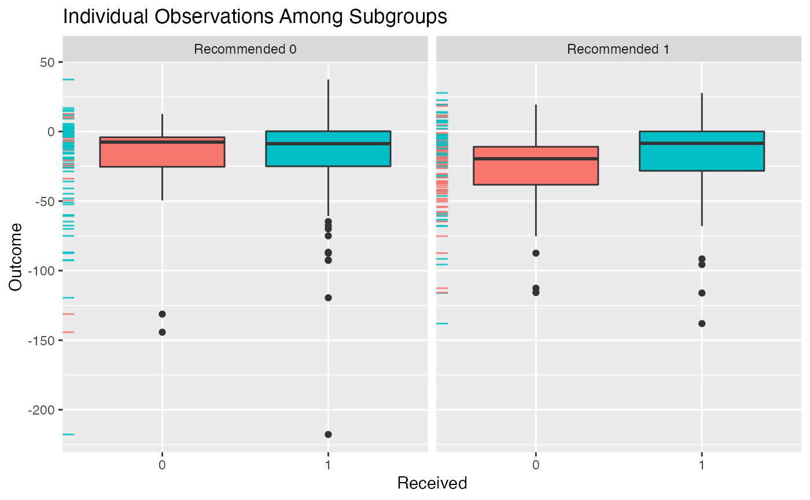
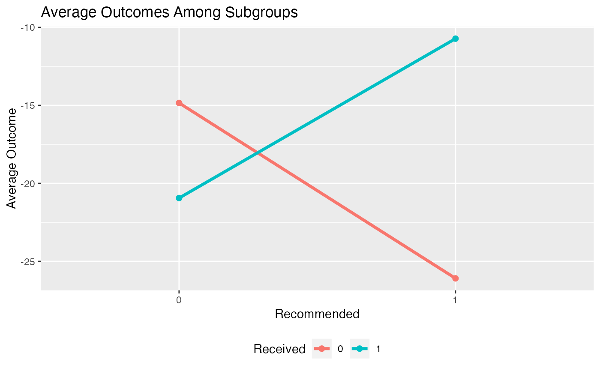
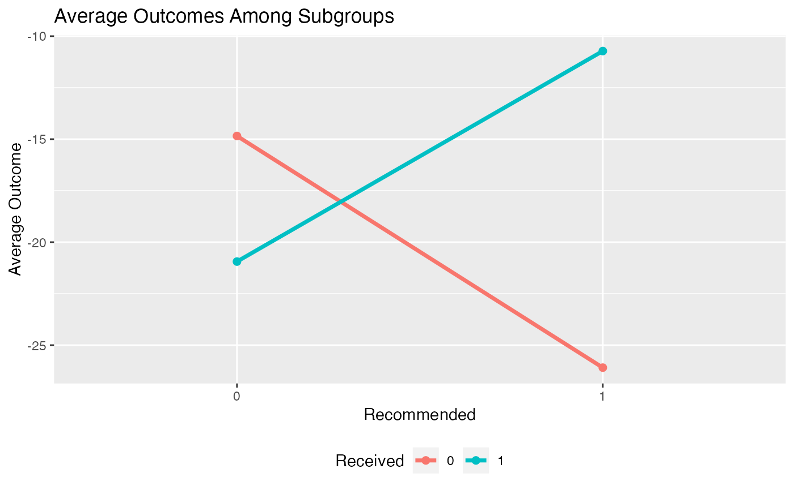
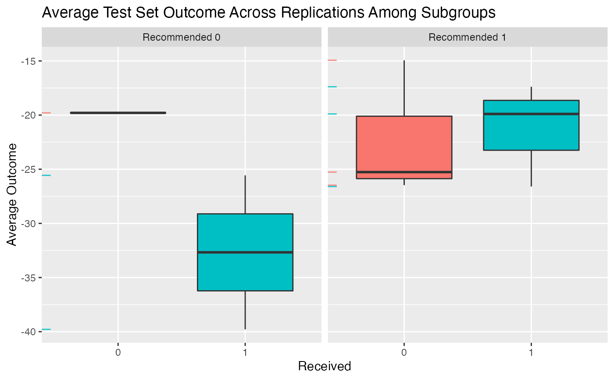
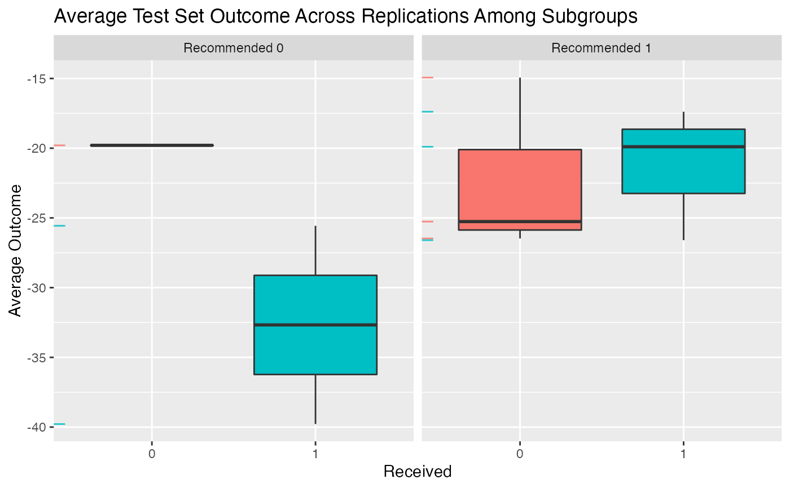
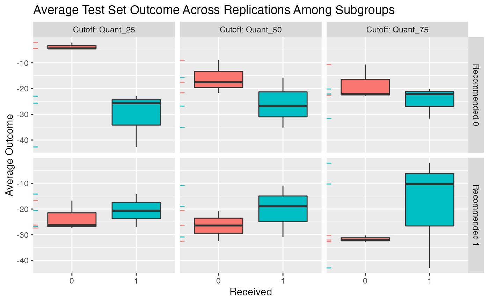
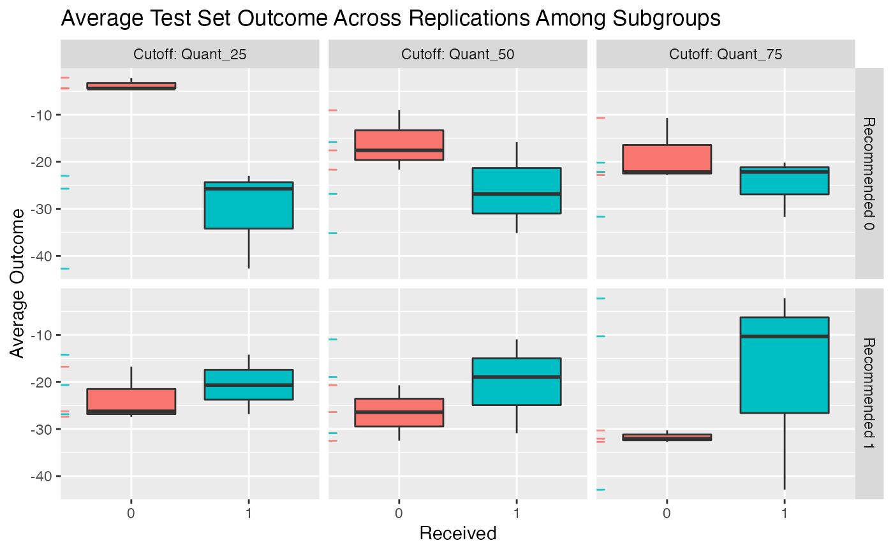

Plotting results for fitted subgroup identification models
Source:R/plot_subgroup_fitted.R, R/plot_subgroup_validated.R
plot.RdPlots results for estimated subgroup treatment effects
Plots validation results for estimated subgroup treatment effects
Arguments
- x
fitted object returned by
validate.subgroup()orfit.subgroup()function- type
type of plot.
"density"results in a density plot for the results across all observations (ifxis fromfit.subgroup()) or ifxis fromvalidate.subgroup()across iterations of either the bootstrap or training/test re-fitting. For the latter case the test results will be plotted."boxplot"results in boxplots across all observations/iterations of either the bootstrap or training/test re-fitting. For the latter case the test results will be plotted."interaction"creates an interaction plot for the different subgroups (crossing lines here means a meaningful subgroup). For the interaction plot, the intervals around each point represent +1 one SE"conditional"For subgroup_fitted objects, plots smoothed (via a GAM smoother) means of the outcomes as a function of the estimated benefit score separately for the treated and untreated groups. For subgroup_validated objects, boxplots of summary statistics within subgroups will be plotted as subgroups are defined by different cutoffs of the benefit scores. These cutoffs can be specified via thebenefit.score.quantilesargument ofvalidate.subgroup.- avg.line
boolean value of whether or not to plot a line for the average value in addition to the density (only valid for
type = "density")- ...
not used
See also
fit.subgroup for function which fits subgroup identification models.
validate.subgroup for function which creates validation results
and fit.subgroup for function which fits subgroup identification models.
Examples
library(personalized)
set.seed(123)
n.obs <- 250
n.vars <- 15
x <- matrix(rnorm(n.obs * n.vars, sd = 3), n.obs, n.vars)
# simulate non-randomized treatment
xbetat <- 0.5 + 0.5 * x[,11] - 0.5 * x[,13]
trt.prob <- exp(xbetat) / (1 + exp(xbetat))
trt01 <- rbinom(n.obs, 1, prob = trt.prob)
trt <- 2 * trt01 - 1
# simulate response
delta <- 2 * (0.5 + x[,2] - x[,3] - x[,11] + x[,1] * x[,12])
xbeta <- x[,1] + x[,11] - 2 * x[,12]^2 + x[,13]
xbeta <- xbeta + delta * trt
# continuous outcomes
y <- drop(xbeta) + rnorm(n.obs, sd = 2)
# create function for fitting propensity score model
prop.func <- function(x, trt)
{
# fit propensity score model
propens.model <- cv.glmnet(y = trt,
x = x, family = "binomial")
pi.x <- predict(propens.model, s = "lambda.min",
newx = x, type = "response")[,1]
pi.x
}
subgrp.model <- fit.subgroup(x = x, y = y,
trt = trt01,
propensity.func = prop.func,
loss = "sq_loss_lasso",
# option for cv.glmnet,
# better to use 'nfolds=10'
nfolds = 3) # option for cv.glmnet
subgrp.model$subgroup.trt.effects
#> $subgroup.effects
#> Est of E[Y|T=0,Recom=0]-E[Y|T=/=0,Recom=0]
#> 6.09734
#> Est of E[Y|T=1,Recom=1]-E[Y|T=/=1,Recom=1]
#> 15.36869
#>
#> $avg.outcomes
#> Recommended 0 Recommended 1
#> Received 0 -14.84435 -26.09056
#> Received 1 -20.94169 -10.72186
#>
#> $sample.sizes
#> Recommended 0 Recommended 1
#> Received 0 17 82
#> Received 1 84 67
#>
#> $overall.subgroup.effect
#> [1] 11.86083
#>
plot(subgrp.model)

plot(subgrp.model, type = "boxplot")
 plot(subgrp.model, type = "interaction")

plot(subgrp.model, type = "conditional")
#> `geom_smooth()` using formula 'y ~ s(x, bs = "cs")'
plot(subgrp.model, type = "interaction")

plot(subgrp.model, type = "conditional")
#> `geom_smooth()` using formula 'y ~ s(x, bs = "cs")'
 valmod <- validate.subgroup(subgrp.model, B = 3,
method = "training_test",
benefit.score.quantiles = c(0.25, 0.5, 0.75),
train.fraction = 0.75)
plot(valmod)

plot(valmod, type = "interaction")
valmod <- validate.subgroup(subgrp.model, B = 3,
method = "training_test",
benefit.score.quantiles = c(0.25, 0.5, 0.75),
train.fraction = 0.75)
plot(valmod)

plot(valmod, type = "interaction")
 # see how summary statistics of subgroups change
# when the subgroups are defined based on different cutoffs
# (25th quantile of bene score, 50th, and 75th)
plot(valmod, type = "conditional")

# visualize the frequency of particular variables
# of being selected across the resampling iterations with
# 'type = "stability"'
# not run:
# plot(valmod, type = "stability")
# see how summary statistics of subgroups change
# when the subgroups are defined based on different cutoffs
# (25th quantile of bene score, 50th, and 75th)
plot(valmod, type = "conditional")

# visualize the frequency of particular variables
# of being selected across the resampling iterations with
# 'type = "stability"'
# not run:
# plot(valmod, type = "stability")